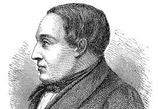

17-27 kaflar
Beina-málið
Atómstöðinn er mikið að kalla út og gera grínn af hlutum.eins og það er mikið gert grín af hversu mikið folk voru að vesenast að flytja bein jónas hallgrímssons heim því þeir voru stadir í kaupmana höfn, en því hann var íslenskur og aðal íslenska ljóðaskáld. Þá það má ekki gera annað en að grafa up og flytja hann heim. Nema það er vandamál, því danskir kyrkju garðar eru grafaðir með folk grafið í sömu gröfina og þá er sett hverjir eru grafnir í leyfið o gen ekki hver er grafin efstur og hver neðstur. Þá það er talið að það hafi grafið up danskan bakara í stað Jónas Hallgríms.
Ugla fer norður
Ugla varð orðinn þreitt að því að búa með konu þing mansins og vildi aftur norður heim. En það endaði með að börninn, sérstaklega strákuinn báðu henni um að verða áfram.
Samband Uglu og Búa Árlands
Þau eru ekki saman, en hann Búi Árlands tekur mikið mark á Uglu síðan hann skilar hana eftir að passa börnin yfir langa tíma og þegar hann er að gera ákvörðun um lög á þing, þá segir Ugla honum að ef hann geri lögina þá er hann að gera lög gegn henni. Sem fær hann til að hætta við. Þau eru ekki saman en það er bent að því að þeim líkar hvort annað og verið að pota grín í að þetta var frekkar algeingur hlutur á þessum tíma, að sveita stúlkur yrðu óléttar útaf þingmani.
Endirinn
Bókinn endar á að það er haldinn jarðaför óla fíkuru